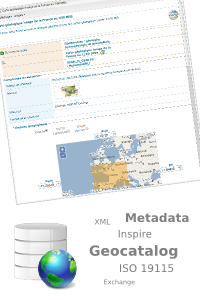
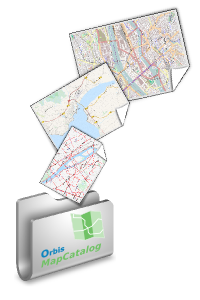
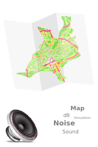

-

Catalogue de métadonnées géographiques.
-

Wiki de Cartopolis pour de plus amples informations sur le projet.
-

OrbisMapCatalog: plate-forme de partage de cartes.
-

Cartographie du bruit à Nantes réalisée dans le cadre de l'ANR EvalPDU.
-

Comparaison de scénarios d'évolution du plan de déplacement urbain Nantais.
-

OrbisGIS: un SIG open source pour et par la recherche.
-

CTS : une bibliothèque pour la gestion des projections.
-

Java Network Analyzer : analyser les graphes avec OrbisGIS.
-

Institut de Recherche en Sciences et Techniques de la Ville.
A propos de CartoPOLIS
Le projet CartoPOLIS est piloté par l'Atelier SIG de l'IRSTV. Il vise à construire une plate-forme commune et interopérable pour stocker, collecter, traiter et diffuser les données sur la ville ayant une composante géospatiale.
Le projet s'inscrit à l'interface de 5 axes de recherche: l'observation, la simulation, les bases de données, la production de connaissances spatialisées et la diffusion - valorisation scientifique.
En savoir plus ? Visitez la page de présentation du projet.